السلسلة 105
السيارة (صنف B) · 25 سؤال. كل سؤال فيه الصورة والصوت. اختار الجواب (ولا جوج إلا كانو صحاح)، ورك على «تأكيد» باش تشوف واش صبتي.
- 25سؤال
- 20باش تنجح
- 1 – 4جواب واحد ولا أكثر

الكلافيي: 1–4 للجواب، Enter للتأكيد وللسؤال الجاي.
السلسلة 105 · النتيجة ديالك
0 / 25
السلسلة 105
السيارة (صنف B) · 25 سؤال، بالصوت، مع الجواب الصحيح والشرح.
السؤال 1
بيّن الجواب
الجواب الصحيح: 2
هذا العلامة ديال الخطر.
-كتعلم على خطير مرور حيوانات اليفة.
- الخطر خارج التجمع السكني كيكون على بعد 150 متر .
- العلامة التكميلية فيها 500 متر و اسهم للأعلى . هذا الاسهم كتعلمني على امتداد الخطر.
يعني الجواب الصحيح هو 2.السؤال 2
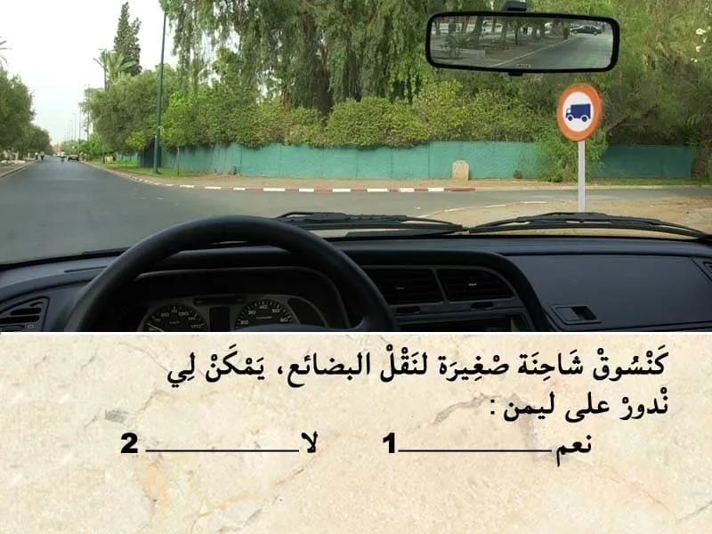
بيّن الجواب
الجواب الصحيح: 2
هذا العلامة ديال المنع.
كتعلم على انه ممنوع المرور على ليمن على جميع عربات نقل البضائع.
و بالتالي ممنوع عليا ندور على ليمن.السؤال 3

بيّن الجواب
الجواب الصحيح: 2
عندنا التشوير الطرقي و الحواجز و الخط المتاصل اقصى اليمين .
كيدل على أن هذا الطريق هي طريق سيار.
✅ و بالتالي السرعة محدودة في 120 كلم في الساعة.
لكن هنا انا حصلت على رخصة السياقة هذي ثلاثة شهور و بالتالي مزال في الفترة الإختبارية،يعني السرعة ديالي في هذا الطريق محدودة في 90 كلم في الساعة.السؤال 4
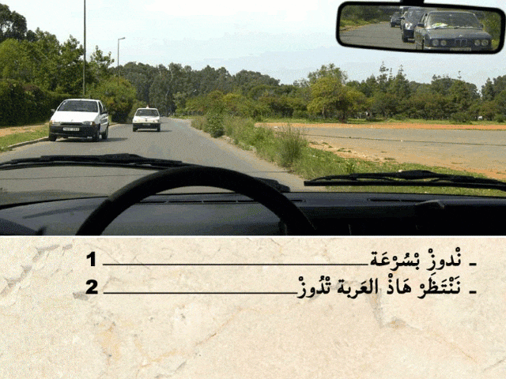
بيّن الجواب
الجواب الصحيح: 2
هذا العربة دات الأولوية .مشغلة ضوء الاستعجال .
الطريق ديالها عامرة و بالتالي واجب عليا نعطيها حق الأسبقية.السؤال 5
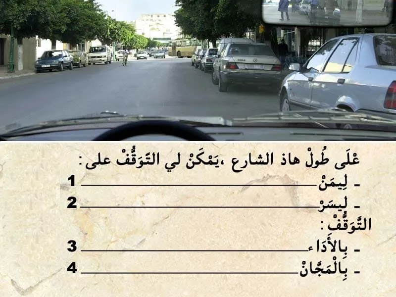
بيّن الجواب
الجواب الصحيح: 1 و 4
التوقف في حالة الطريق فيه السير في الإتجاهين.
و بالتالي يمكن لي نتوقف على ليمن فقط .
و في هذا الحالة ما عندي حتى علامة كتعلم على أن التوقف بالخلاص .
هذا كيعني ان التوقف بالمجان.السؤال 6
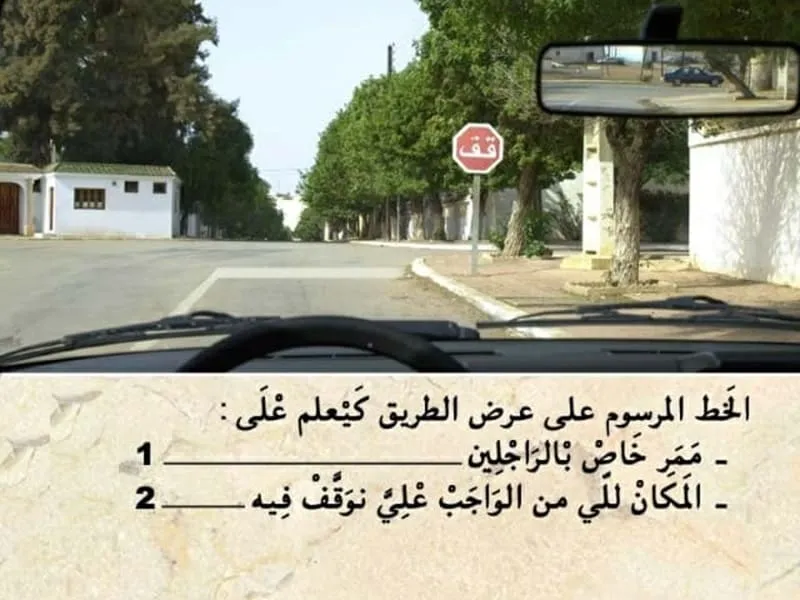
بيّن الجواب
الجواب الصحيح: 2
عند وجود علامة كيتوجب الوقوف تم اعطاء حق الأسبقية للي جاي من ليمن و للي جاي من ليسر.
و الوقوف كيكون عند الخط المتصل في عرض الطريق.السؤال 7
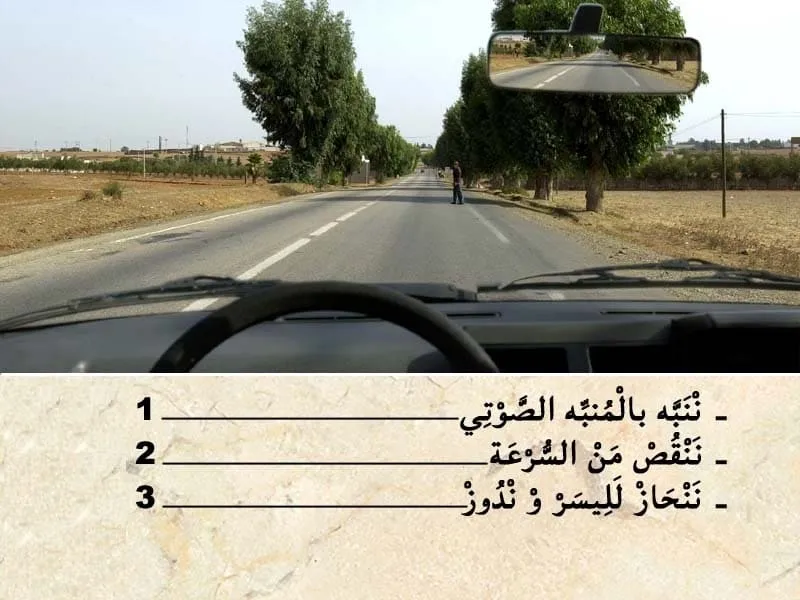
بيّن الجواب
الجواب الصحيح: 2
في هذا الحالة واجب عليا ننقص من السرعة .
لان هذا الراحل قاطع الطريق و بالتالي ننقص من السرعة و الا دعت الضرورة نوقف.السؤال 8

بيّن الجواب
الجواب الصحيح: 3
مستوى زيت الحصار كان في الحد الأقصى في الأسبوع الماضي و دبا قريب للحد الأدنى.
يعني كاين مشكل في جهاز الحصار .
و بالتالي كيتوجب عليا نقوم بالمراقبة لأجهزة الحصر ديالي الآن.السؤال 9
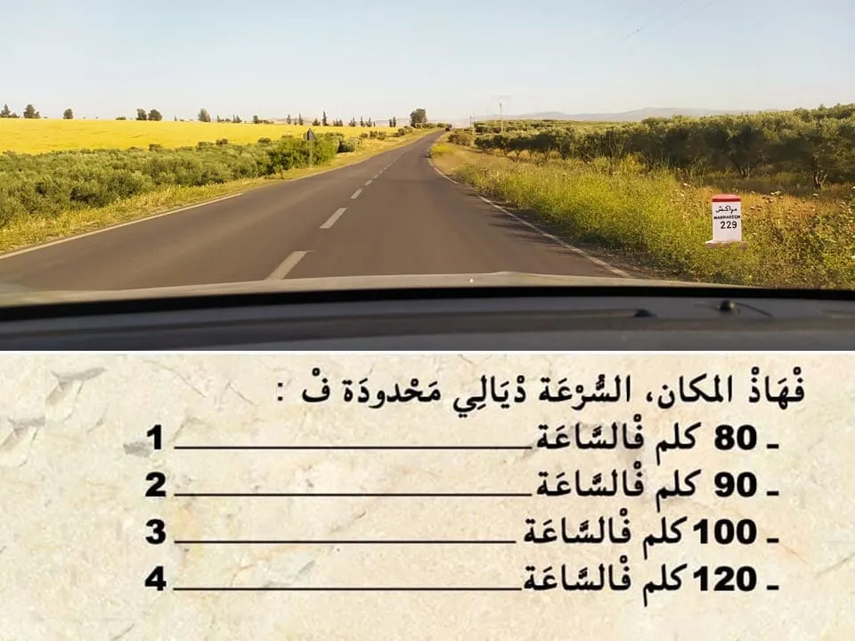
بيّن الجواب
الجواب الصحيح: 3
هذا التشوير الطرقي "الارمة" مصبوغة باللون الأحمر و بالتالي كتعلم على ان الطريق هي طريق وطنية .
وبالتالي السرعة محدودة في 100 كلم في الساعة .السؤال 10
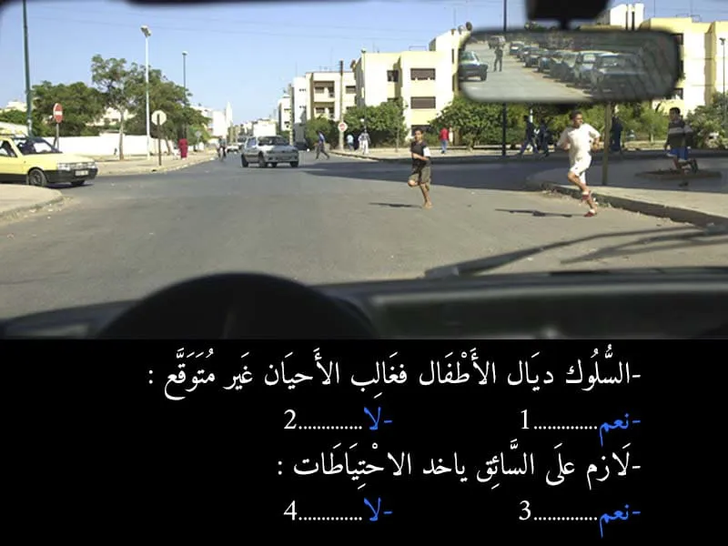
بيّن الجواب
الجواب الصحيح: 1 و 3
السلوك ديال الاطفال في الغالب كيكون غير متوقع و بالتالي من الواجب عليا. ننقص من السرعة و نقوم بأخد الاحتياطات .
السؤال 11
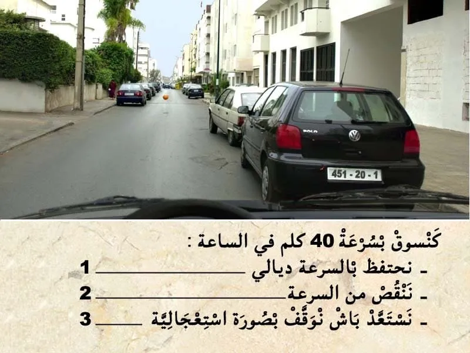
بيّن الجواب
الجواب الصحيح: 2 و 3
في هذا الحالة انا في مكان كيتواجدوا فيه الاطفال و بالتالي من الواجب عليا ننقص من السرعة و نستعد باش نقوم بالحصر.
حيت السلوك ديال الاطفال كيكون غير متوقع.
الكرة الموجودة فوسط الطريق كتدل على وجوذ أطفال.السؤال 12
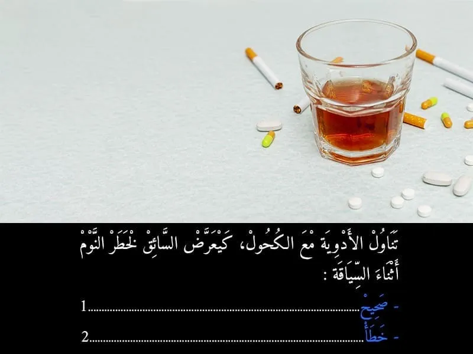
بيّن الجواب
الجواب الصحيح: 1
تناول الكحول مع الادوية ممكن تعرض السائق للنوم . و كتعتبر جنحة الا تجاوز نسبة الكحول في الهواء لي خارج من الفم 0.10 غ في الليتر.
السؤال 13
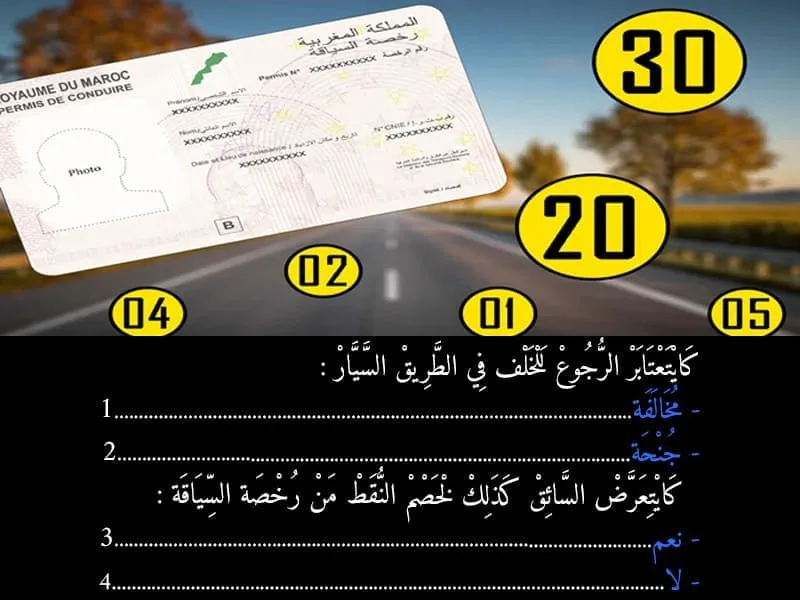
بيّن الجواب
الجواب الصحيح: 2 و 3
الرجوع إلى الخلف في طريق سيار أو نصف دورة في نفس الطريق مع عبور الشريط المركزي الفاصل بين القارعتين.
يعاقب ب:
غرامة من أربعة آلاف (4.000) إلى ثمانية آلاف (8.000) درهم توقيف رخصة السياقة لمدة تتراوح ما بين شهر واحد وثلاثة أشهر في حالة العود إلى ارتكاب المخالفة، يعاقب المخالف بالحبس من شهر إلى ثلاثة أشهر وبغرامة من عشرة آلاف (10.000) إلى خمسة عشر الف (15.000) درهم أو بإحدى هاتين العقوبتين فقط، علاوة على ذلك، يضاعف الحد الأقصى لمدة توقيف رخصة السياقة.السؤال 14

بيّن الجواب
الجواب الصحيح: 2
في هذا الحالة كاين هذا الراجل في ممر ديال الراجلين. و بالتالي واجب عليا نوقف و نعطي حق الأسبقية.
السؤال 15

بيّن الجواب
الجواب الصحيح: 2 و 4
هذا العلامة ديال المنع.
- كتمنع المرور على العربات لي "كيتجاوز" العرض ديالها 2 متر.
⛔ العلامة كتخص العرض و ليس العلو
💥💥 في السؤال قال ليك لي العرض ديالها 2 متر.
ما قاولوش ليك لي "كيتجاوز " العرض. ركز مزيان .السؤال 16
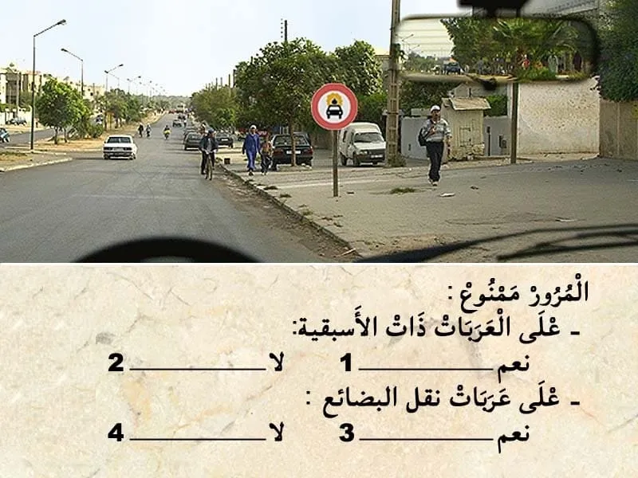
بيّن الجواب
الجواب الصحيح: 2 و 4
هذا العلامة ديال المنع.
كتعلم بلي المرور ممنوع على جميع العربات لي كتنقل مواد قابلة الإشتعال.
✅ المنع لا يطبق على عربات نقل البضائع ، و على عربات دات الأسبقية .السؤال 17
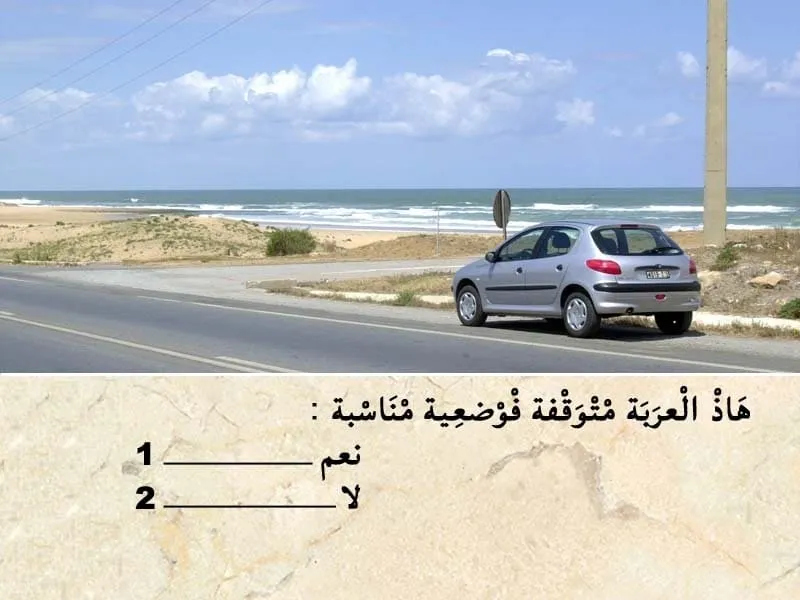
بيّن الجواب
الجواب الصحيح: 2
من بين الاماكن لي ممنوع التوقف فيها على جنب الطريق :
- رأس العقبة. واجب عليا نخلي مسافة امان بين و بين راس العقبة ديال 60 متر على الأقل.
- في المنعرج. واجب نخلي مسافة 50 متر بيني و بين المنعرج.
- و ملتقى الطرق . من الواجب ترك مسافة 10 متر قبل و بعد المنعرج.السؤال 18
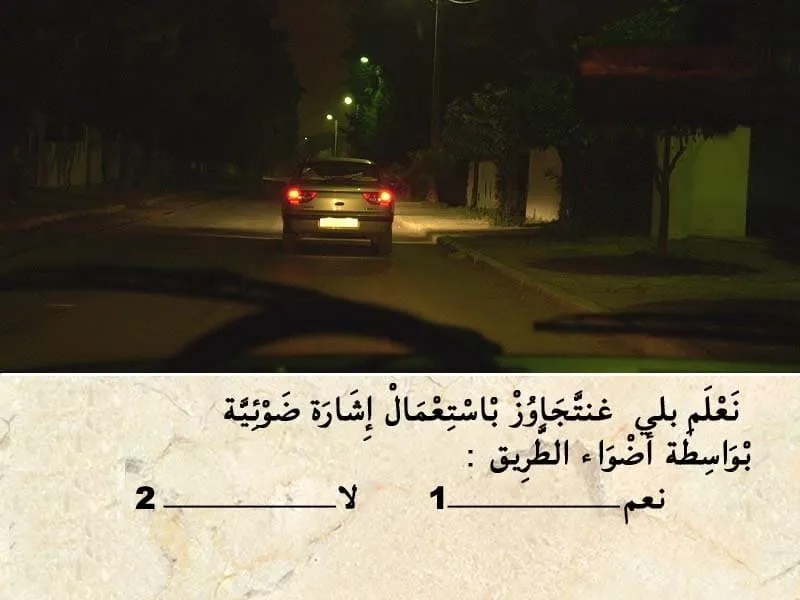
بيّن الجواب
الجواب الصحيح: 1
باش نتجاوز يمكن لي نستعمل اضافة لمؤشر تغير الإتجاه.
نستعمل إشارة ضوئية باضواء الطريق.السؤال 19
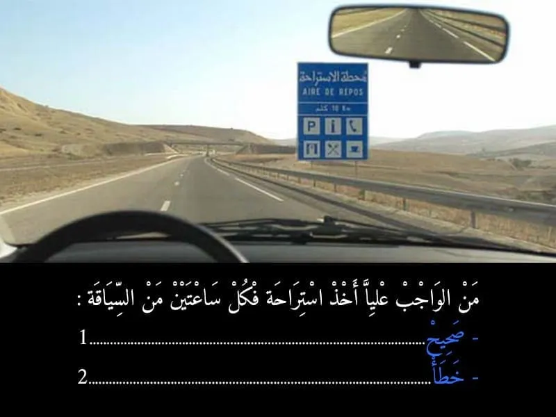
بيّن الجواب
الجواب الصحيح: 1
عدم احترام فترة الراحة. كتعتبر جنحة. و من الواجب القيام ب استراحة كل ساعتين ديال السياقة.
او في حالة الشعور بالنعاس.
حيت كيشكل خطر ديال وقوع حوادث السير.السؤال 20
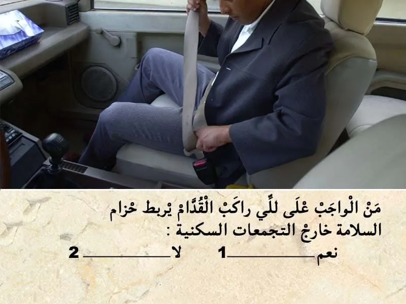
بيّن الجواب
الجواب الصحيح: 1
عدم ربط حزام السلامة.
كتعتبر مخالفة من الدرجة الثانية.
كتعرض السائق لغرامة مالية 💸 ديال 500 درهم.
و يسحب نقطة واحدة من رصيد رخصة السياقة.
- بالنسبة للركاب الأمامين من الواجب ربط حزام السلامة داخل و خارج التجمع السكني .
بالنسبة للركاب الخلفيين من الواجب ربط حزام السلامة خارج التجمع السكني فقط .السؤال 21
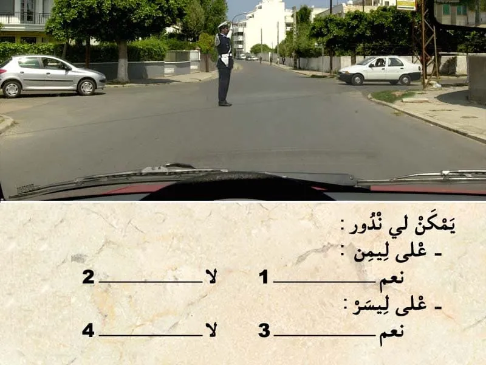
بيّن الجواب
الجواب الصحيح: 1 و 3
فهذا الحالة الشرطي عاطيني بجنبه و كيعطيني إشارة باش ندوز و بالتالي ننقص من السرعة و ندوز .
السؤال 22

بيّن الجواب
الجواب الصحيح: 1 و 4
في هذا الحالة كاين الضوء الاحمر شاعل . و بالتالي واجب عليا نوقف و ننتظر حتى يشعل الضوء الخضر.
السؤال 23
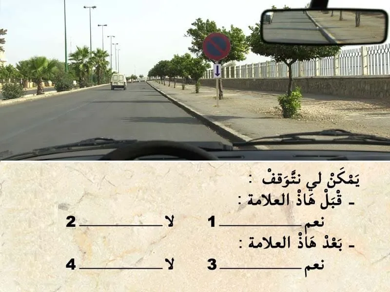
بيّن الجواب
الجواب الصحيح: 2 و 3
هذا العلامة ديال المنع كتمنع التوقف بعد العلامة .
و تحت منها علامة تكميلية فيها سهم للأسفل يعني أن التوقف ممنوع قبل العلامة.
و بعد العلامة يمكن لي نتوقف.السؤال 24

بيّن الجواب
الجواب الصحيح: 2
هذا العلامة ديال الإرشاد. باللون الأصفر. "تشوير مؤقت"
- كتعلم على طريق مقطوع على بعد 300 متر .
كيعني ممنوع عليا نكمل السير للقدام و واجب عليا نغير الإتجاه.السؤال 25
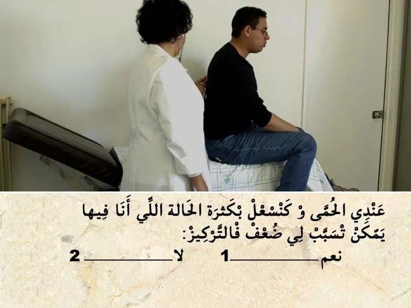
بيّن الجواب
الجواب الصحيح: 1
الحمى و السعال بكثرة ممكن تسبب في ضعف في التركيز.